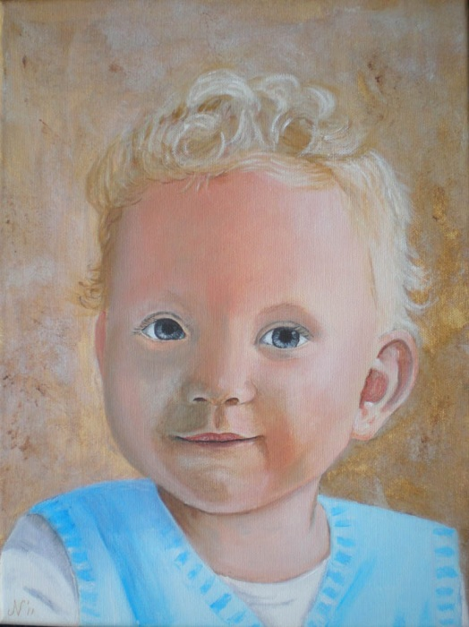

Mijn kleinzoon Aron

Mijn kleindochter Rebecca
Dit ben ik zelf.... 22 lentes jong, is al een tijdje terug!!
En dit is Jan, mijn man. Hij was hier circa 30 jaar.
Mijn kinderen toen ze nog klein waren..
Robbie geb.1975
En Dennie geb.1982